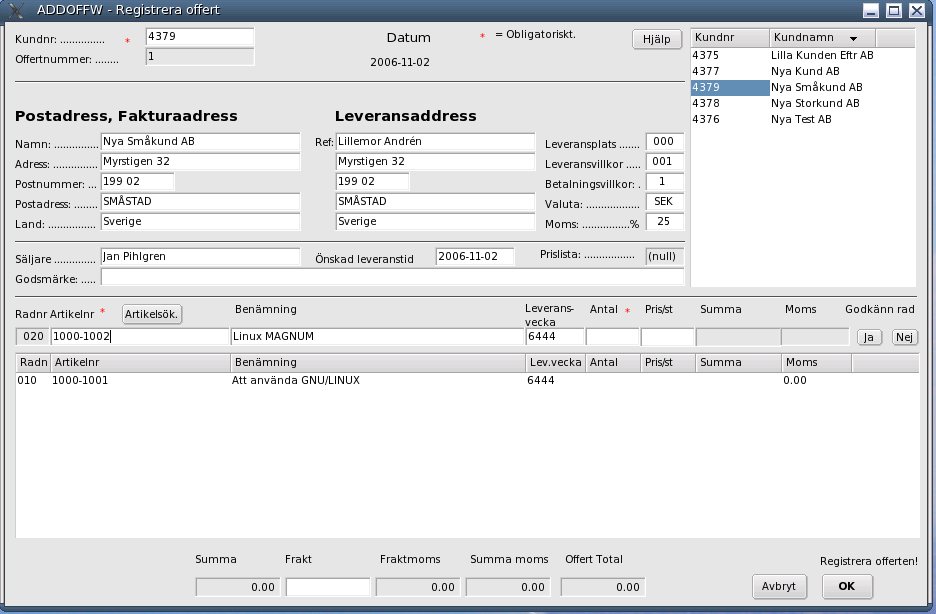
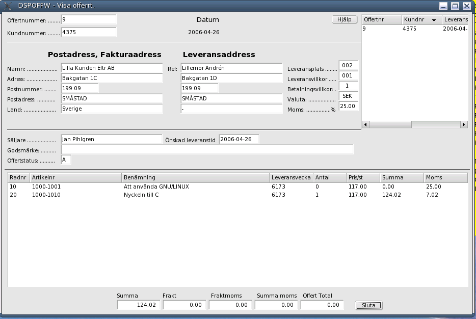
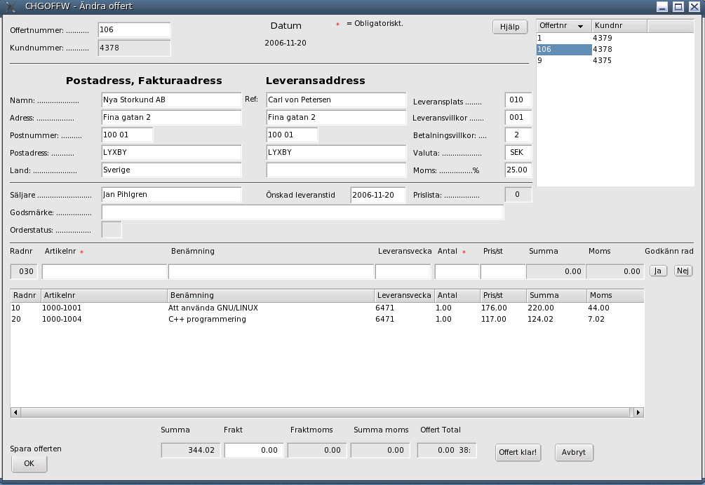
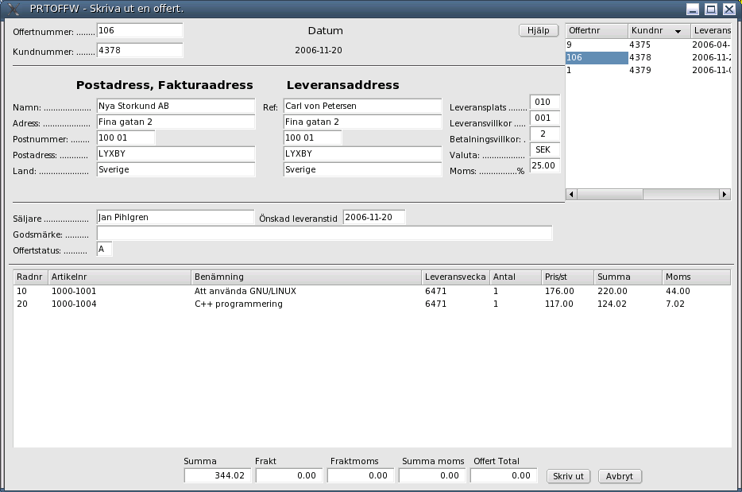
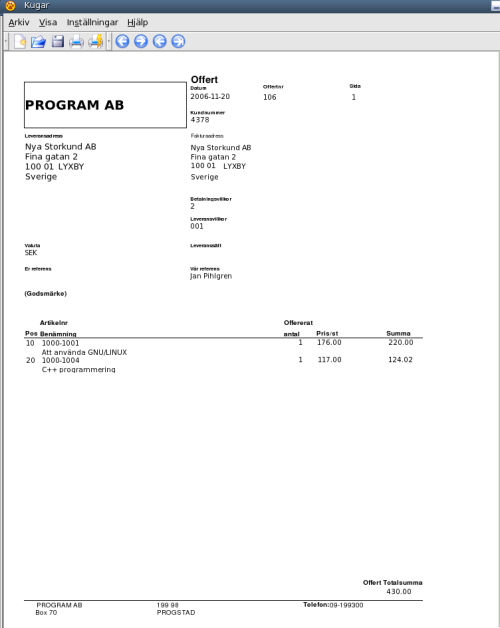
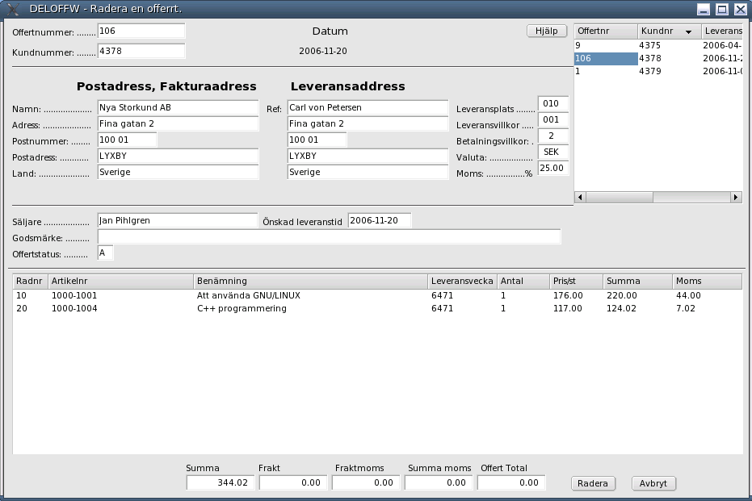
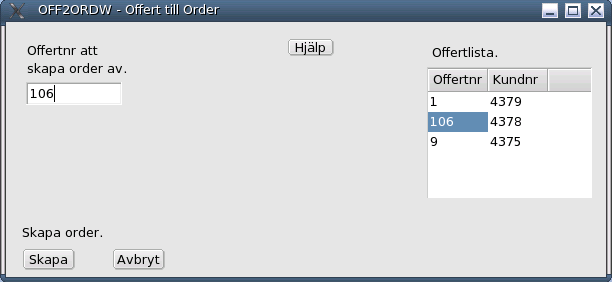

Order/Lager/Fakturering för Linuxsystem
Användarmanual
Kapitel Offerter
Version 0.12
2006-11-30
This program is free software; you can redistribute it
and/or modify it under the terms of the GNU General Public License
as published by the Free Software Foundation; either version 2 of the License, or
(at your option) any later version.
Copyright 2006 Jan Pihlgren.
Innehåll
Inledning Registrering av offert. Titta på en offert. Ändra på en offert. Skriva ut en offert. Radera en offert. Offert till order.Programmodulen OFFERT möjliggör hantering av offerter. När kunden har accepterat en offert kan man enkelt omvandla offerten till en order. Utskrift av offerter kräver att programmet Kugar finns installerat. Kugar är en del av programsviten KOffice (KDE).

Genom att ange kundnummer 0 (noll) i fältet Kundnr. Programmet hämtar då ett ledigt kundnr (senaste kundnr + 1). I och med detta så flyttas markören (cursorn) till fältet Namn och det är bara att börja fylla i kunduppgifterna.
Genomk att klicka på önskat Offertnr i listan så hämtas data för offerten och den kan studeras.
För att hämta önskad offert klicka på offertnumret i listan till höger.
OBS! Programmet (PRTOFFW) kräver att programmet Kugar finns installerat. Kugar är en del i programsviten Koffice.
PRTOFFW tillsammans med programmet Kugar används för utskrift av offerter, antingen på skrivare eller en till fil.
I det fall man väljer att spara utskriften på en fil så kan den filen sedan användas att skicka offerten elektroniskt till kunden.

Välj från listan vilken offert som önskas skrivas ut och klicka på Offertnr så hämtas information över offerten. För att starta utskriften klicka på knappen Skriv ut. Efter några sekunder kommer programmet Kugar att presentera utskriften och där kan man sedan antingen skriva ut offerten på en skrivare eller spara utskriften som en fil för att till exempel skicka offerten som ett e-mail till kunden.

Välj från listan vilken offert som ska raderas och klicka på Offertnr så hämtas information över offerten. För att radera offerten klicka på knappen Radera.
Genomatt klicka på önskat offertnr så skriv detta in i Offertnr att skappa order av.